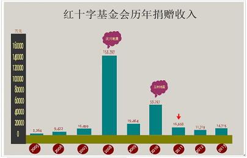

中国人是慷慨还是吝啬？
2011年6月20日，郭美美在微博上炫富，并自称为“中国红十字会商业总经理”，引发网络争议。而后，疑为中国红十字会副会长的郭长江发布相关微博，使郭美美事件升温。
2011年6月22日，中国红十字会发表申明，称郭美美与其无关，并以郭美美虚构事实为由向警方报案；新浪撤销郭美美实名认证。
2011年7月4日，中红博爱资产管理有限公司CEO翁涛曝出：郭美美是中红博爱前董事王军的女友。
2013年4月24日，中国红会社会监督委员会新闻发言人王永表示将于5月中下旬重新调查郭美美事件，遭红十字会秘书长否认，红会因此再次被拖入质疑漩涡中。
2013年12月22日，由郭美美自筹资金拍摄并主演的电影《我是郭美美》在深圳海滨南澳开拍，反映2011年关于“红十字会”等一些列事件。
2014年7月9日，郭美美因违法参与赌球等罪而被警方抓获，郭美美事件再次引发全民热议。
舆论有言：郭美美事件使红会公信力受重创。事实是否如此？

由红十字基金会官方数据显示，2008年度（雪灾、汶川地震等）及2010年度（玉树地震）的捐赠收入较往年较高。2011年的捐赠款数为16668万元，正值郭美美事件发生年，此后，2012年捐赠收入有所下降，与2011年相比，减少了近5千万元，总体而言，2011年、2012年及2013年红十字基金会的捐赠收入较为稳定。就捐款数值而言，郭美美事件对其影响似乎并不明显。然而，放眼全球，就捐赠情况而言，中国人是慷慨还是吝啬？让全球捐助指数来为你揭晓……